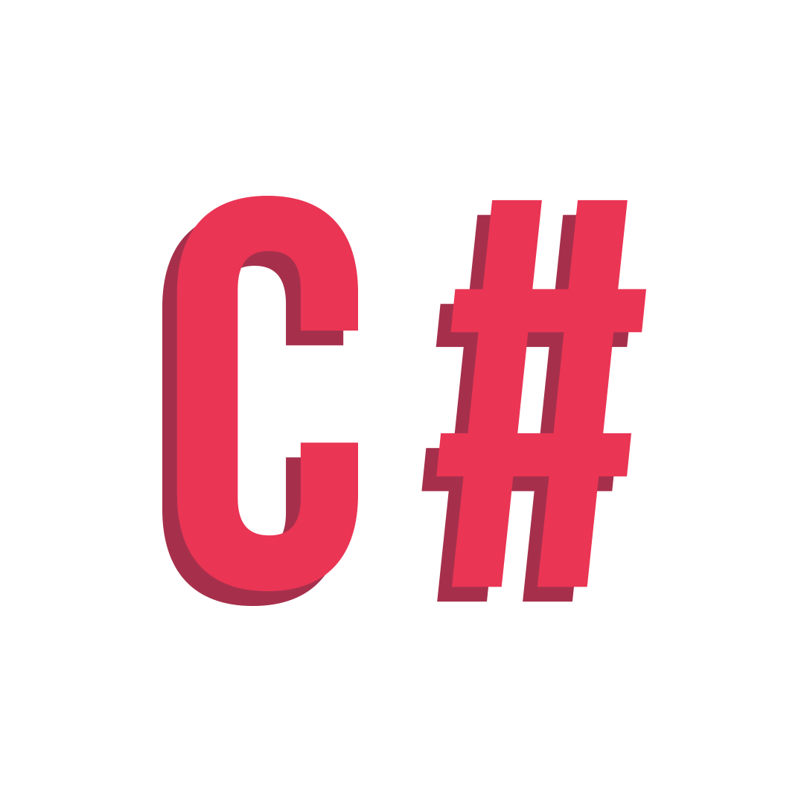

About Lufuno
I am an IT graduate from the Vaal University of Technology, who is passionate about solving problems. I love writing code
and I believe in the power of programming i will transform and improve the lives of people around the world. I love coding with Java, JavaScript and C#. I am keen at
exploring new technologies and architectures. I have 1 year 6 months experience in IT Support. I have excellent reputation
for resolving problems and improving customer satisfaction. I am a strategic thinker,
hard worker, loyal, dedicated, and enthusiastic person, proactive with a focus on solutions. I am currently doing System Development Trainee at Standard Bank South Africa.
I strive at continuously improving my knowledge, by studying practices, languages, methodologies and applying what I learn to my everyday work.
I strongly believe in teamwork and in the fact that the team should be autonomous and responsible during the whole life-cycle of a product or a service,
from its development to its release and to software maintenance.
